My Life Choice
Guía completa para descubrir tu carrera ideal
Primeros pasos
Sigue esta guía para comenzar a explorar carreras en menos de tres minutos.
Inicia el juego
Al abrir My Life Choice aparecerá la pantalla principal. Selecciona Empezar Nueva Aventura para comenzar desde cero, o Continuar Partida si ya tienes una sesión previa.
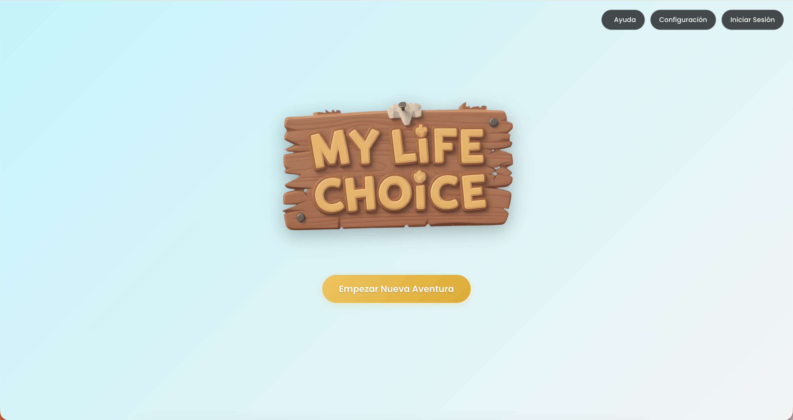
Crea tu cuenta (opcional)
Puedes registrarte con tu correo electrónico o con una cuenta de Google. Si prefieres no hacerlo en este momento, solo empieza una nueva partida, y en la introducción elige Continuar como invitado.
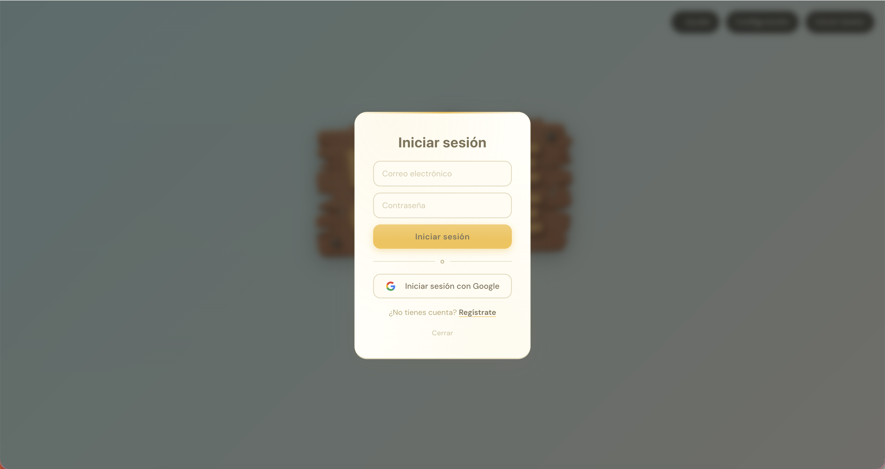
Elige a tu guía
Tres personajes acompañarán la aventura: Lili, Nick o Andrew. Selecciona el que prefieras. Estos explicarán el funcionamiento del juego.
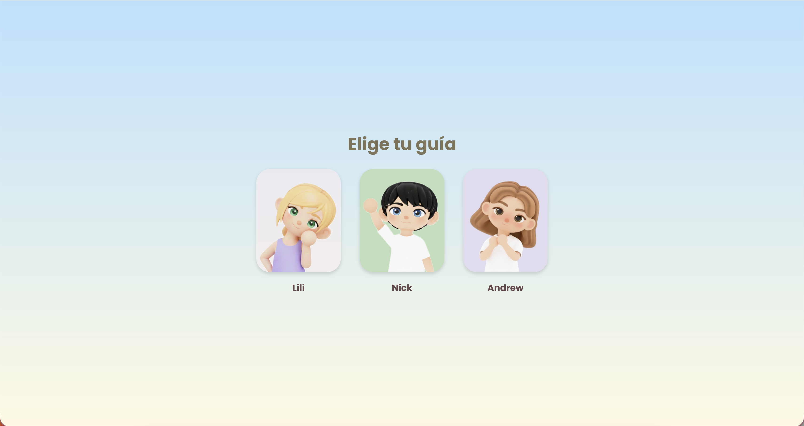
Ingresa tu nombre
El guía solicitará tu nombre. Escríbelo en el campo de texto y presiona la flecha ▶ para continuar. El juego utilizará ese nombre durante toda la aventura.
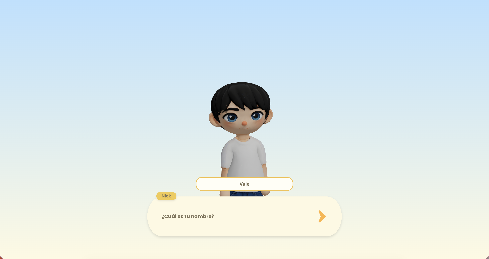
Selecciona tu personaje
Elige la apariencia de tu avatar: Femenino, Masculino o No binario. Esta selección determina cómo se verá tu personaje dentro del mundo.
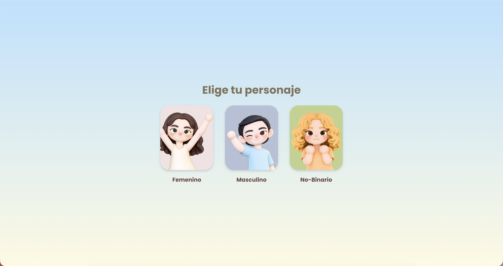
Lee las instrucciones iniciales
Los guías te explicarán como jugar, adicionalmente puedes dar clic en el ícono? para consultar las indicaciones básicas.
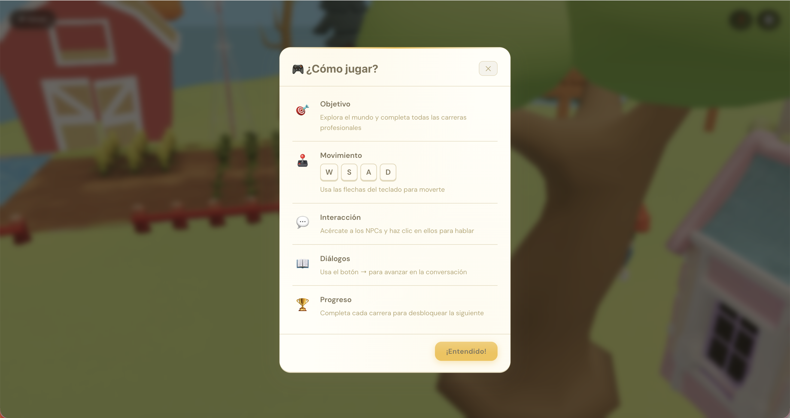
Explorando el mundo
Navega libremente y descubre las carreras disponibles.
Utiliza las teclas WASD o las flechas del teclado para mover el personaje por el mundo. Cada tecla corresponde a una dirección.
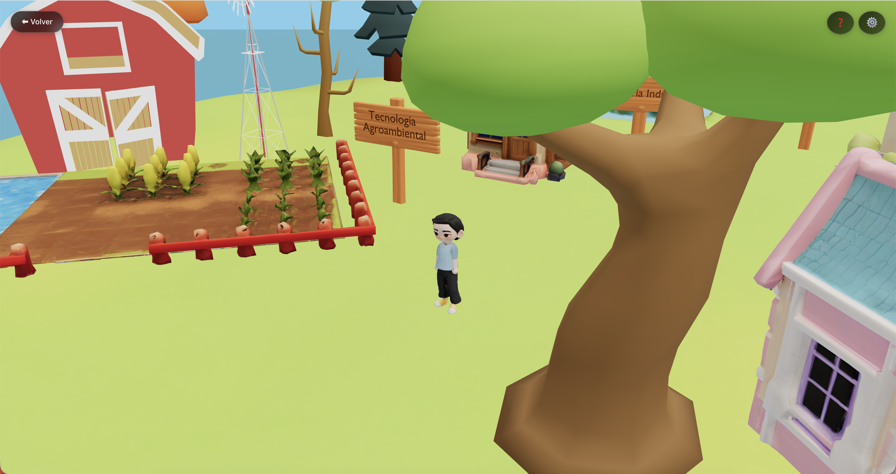
Las casas representan carreras
Cada casa del mundo corresponde a una carrera profesional. Verás el nombre de la carrera en un letrero al lado de cada una. Hay más de diez carreras disponibles para explorar.
Ingresa a una carrera
Al darle clic a una casa aparecerá un mensaje de confirmación. Haz clic en Sí para entrar, o en No si deseas seguir explorando el mundo antes.
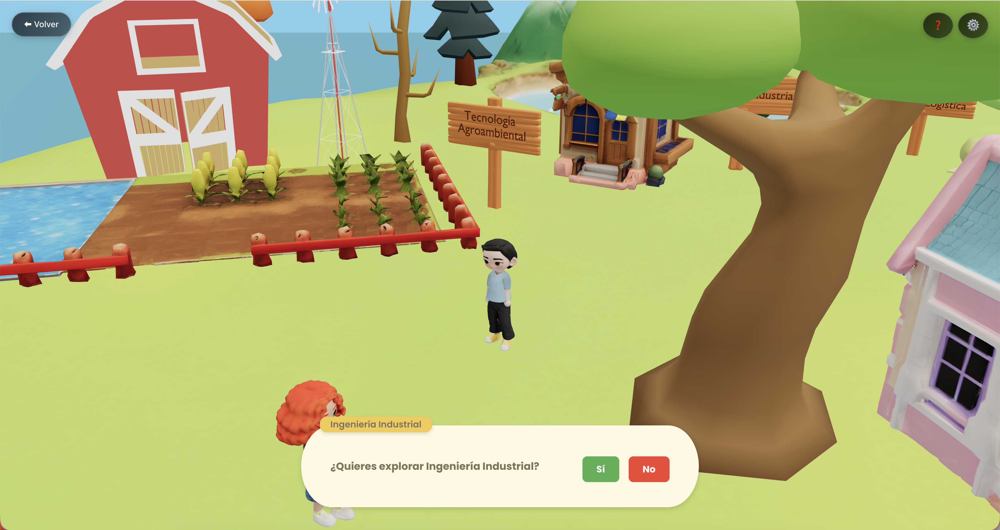
Interactúa con los personajes del mundo
Dentro del mundo encontrarás personajes secundarios (NPCs). Al acercarte, podrán invitarte a explorar su carrera. Selecciona Sí o No según tu interés.
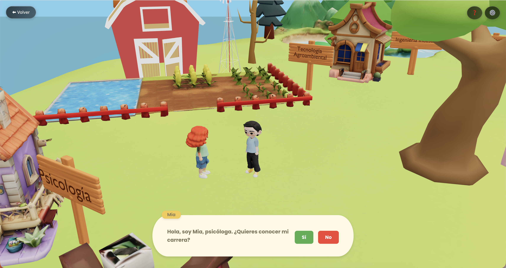
En cualquier pantalla encontrarás el botón ← Volver en la esquina superior izquierda. Haz clic en él para salir de la carrera actual y continuar explorando otras.
Los juegos por carrera
Cada carrera incluye un mini-juego que simula situaciones reales del área.
Conoce al profesional
Al ingresar a una carrera, un personaje del área te saludará y describirá su trabajo. Lee el diálogo con atención y haz clic en la flecha ▶ para avanzar.
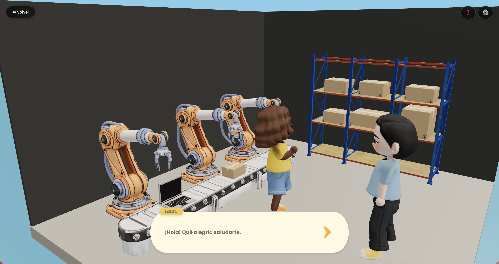
Completa el desafío
Cada carrera presenta un reto diferente. Según el área, el juego puede solicitarte: Seleccionar opciones Arrastrar y soltar Ordenar pasos Clasificar situaciones
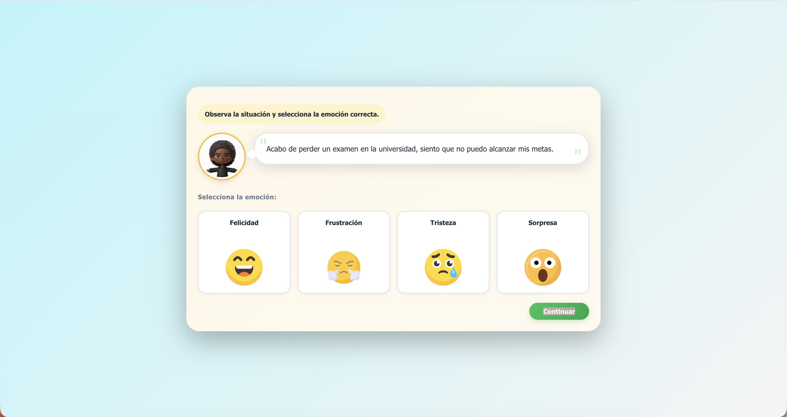
Finaliza el reto
Al completar el juego aparecerá una pantalla de confirmación. Haz clic en Continuar para avanzar.
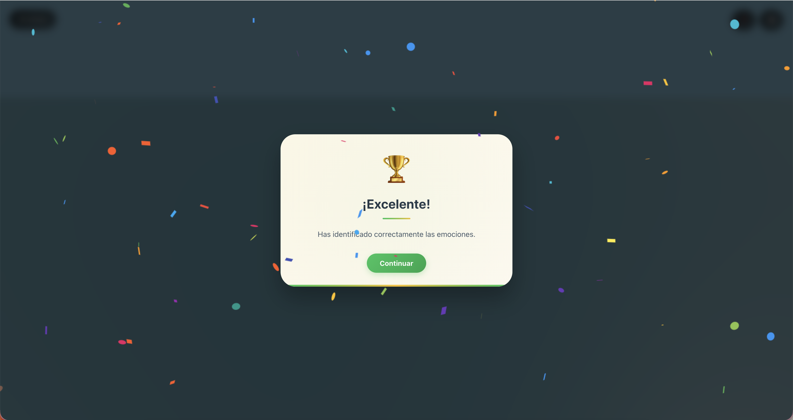
Califica la carrera
El juego te pedirá que evalúes del 1 al 5 qué tanto te gustó la carrera explorada. Esta valoración es un componente del perfil vocacional que se construye al final. No hay respuesta correcta ni incorrecta.
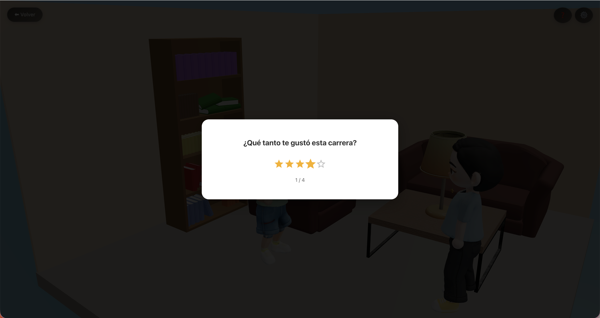
Guía por carrera
Cómo se juega
- Aparece una situación empresarial.
- El jugador lee el problema.
- Puede asignar presupuesto o personal para resolverlo.
- Presiona Continuar para ver el resultado.
La reputación de la empresa sube o baja según la decisión tomada.

Cómo se juega
- A la derecha aparece el libro de gastos de la empresa.
- A la izquierda se muestran facturas o recibos originales.
- El jugador revisa ambos documentos.
- Si encuentra un monto incorrecto, lo corrige con el valor correcto utilizando los botones + y -.

Cómo se juega
- Arrastra las tarjetas para organizar las estaciones de producción en el orden correcto.
- Identifica cuál estación tarda más tiempo (cuello de botella) y selecciónala.
- Elige una solución para optimizar esa estación y mejorar el proceso.
Fase 1 — Organizar línea

Fase 2 — Cuello de botella

Fase 3 — Optimización

Cómo se juega
- Aparece una situación donde una persona expresa lo que está viviendo.
- El jugador lee el mensaje.
- Debe elegir la emoción que mejor representa cómo se siente esa persona.
- Presiona Continuar para pasar al siguiente caso.
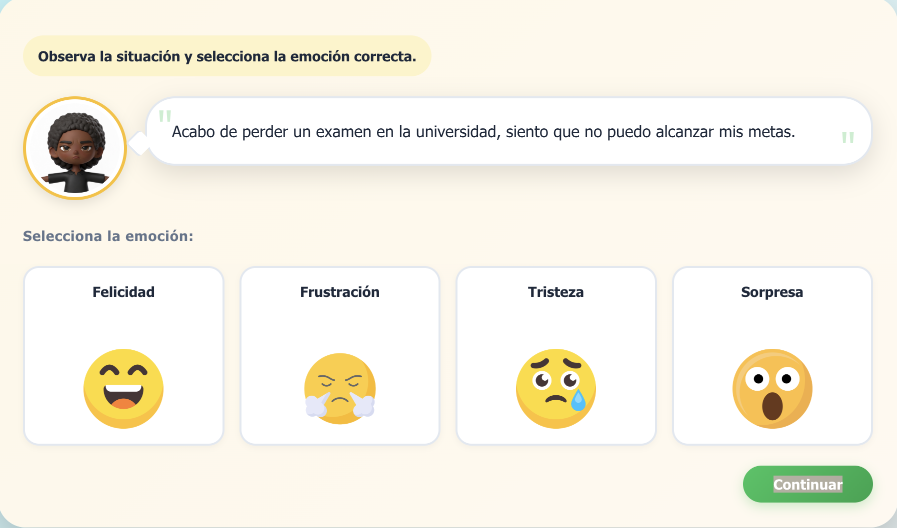
Cómo se juega
- Aparece una situación relacionada con el desarrollo de una aplicación.
- El jugador lee el problema.
- Debe seleccionar la fase del desarrollo que corresponde.
- Presiona Continuar para avanzar al siguiente caso.

Cómo se juega
- Aparecen varios ejercicios en la pantalla.
- El jugador observa cada ejercicio.
- Debe arrastrarlo a la categoría del músculo o parte del cuerpo correspondiente.
- Luego presiona Continuar para revisar el resultado.

Cómo se juega
- Aparecen varios fragmentos de historia en la parte inferior.
- El jugador arrastra cada fragmento al espacio que corresponda: inicio, desarrollo o final.
- Cuando la historia esté completa, presiona Continuar.

Cómo se juega
- Aparece una situación relacionada con el ambiente o la agricultura.
- El jugador lee la descripción.
- Debe elegir el problema ambiental que corresponde.
- Presiona Continuar para pasar al siguiente caso.

Cómo se juega
- Aparecen varias situaciones relacionadas con alimentos.
- El jugador lee cada caso.
- Debe arrastrar la situación a la categoría del problema correspondiente.
- Luego presiona Continuar para revisar el resultado.

Cómo se juega
- Arrastra las tarjetas para ordenar correctamente los componentes del circuito de un bombillo.
- Coloca cada elemento en la posición que le corresponde dentro del circuito.
- Cuando el orden sea correcto, presiona Continuar.

Cómo se juega
- Aparecen varias situaciones de transporte.
- El jugador lee cada caso.
- Debe arrastrar la situación al medio de transporte correcto: avión, barco, camión o tren.
- Luego presiona Continuar para revisar las respuestas.
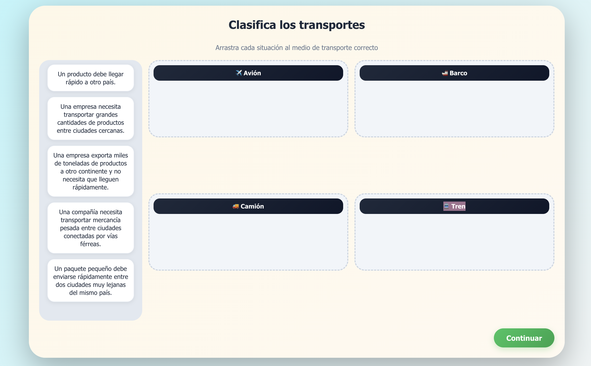
Cómo se juega
- Aparece una situación relacionada con actividades agrícolas.
- El jugador lee la acción realizada.
- Debe seleccionar si es buena práctica o mala práctica.
- Luego presiona Continuar para pasar a la siguiente situación.

Cómo se juega
- Aparecen varias acciones relacionadas con la reparación de una máquina.
- El jugador debe arrastrar cada paso al orden correcto.
- Cuando crea que el orden es correcto, presiona Continuar.

Tus resultados
Al finalizar, el sistema muestra las carreras más afines a tu perfil.
Tu Top 5 de carreras
Al finalizar la exploración, la aplicación presenta un resumen con las cinco carreras o áreas de interés más afines a las respuestas del usuario.
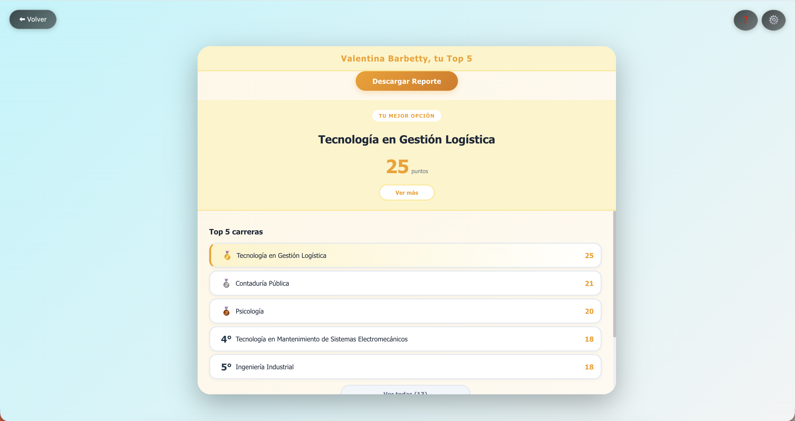
Detalle de cada carrera
Haz clic en cada carrera para acceder a información adicional en la Universidad del Valle.
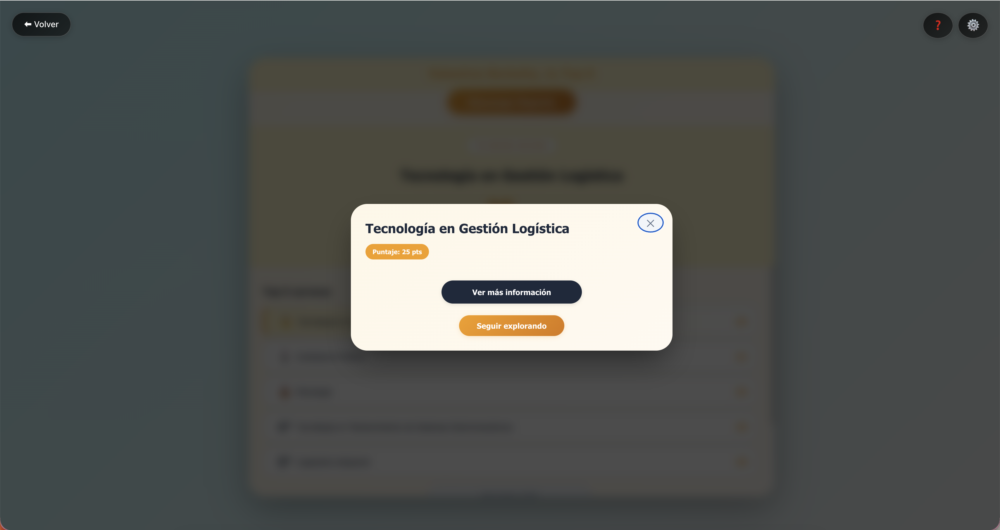
Descarga tu reporte
Selecciona el botón Descargar Reporte para guardar un archivo PDF con los resultados completos.
Configuración y ajustes
Personaliza la experiencia desde cualquier pantalla del juego.
Acceder a la configuración
En cualquier pantalla encontrarás el ícono de engranaje ⚙ en la esquina superior derecha. Haz clic sobre él para abrir el panel de ajustes.
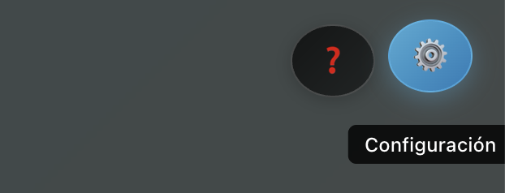
Música de fondo
Utiliza el interruptor junto a "Música de fondo" para activarla o desactivarla. El deslizador adyacente permite ajustar el nivel de volumen.
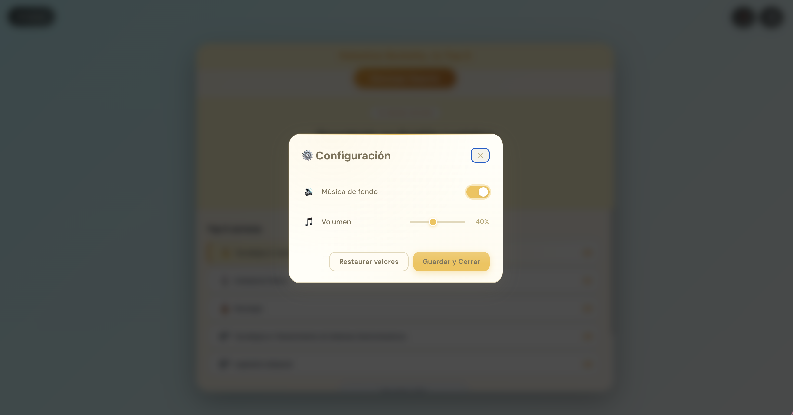
Cerrar sesión
Si iniciaste sesión con una cuenta, el botón Cerrar Sesión estará disponible en la pantalla principal. Al cerrar sesión, el progreso permanece guardado siempre y cuando hayas iniciado sesión.